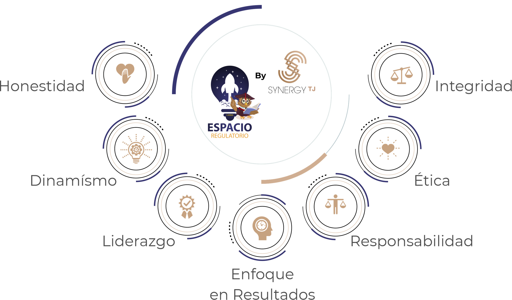

SYNERGY TJ
SYNERGY TJ
SYNERGY TJ
SYNERGY TJ
Soluciones multidisciplinarias de alto nivel para asegurar el cumplimiento normativo y el éxito de sus proyectos en México e internacionalmente.
Consultoría SeniorSomos una empresa joven conformada de profesionales con más de 16 años de experiencia en la industria de ciencias de la Salud, así como sus establecimientos.
Nuestro equipo multidisciplinario y especializado, está en continua actualización de los requerimientos de COFEPRIS, SENASICA y el Consejo de Salubridad General para el asegurar el cumplimiento normativo de nuestros clientes.
Somos expertos en regulación sanitaria y su aplicación, por lo que ofrecemos servicios a la medida de las necesidades y objetivos de los clientes.
Coadyuvar a que las empresas cuenten con las herramientas suficientes para la toma de decisiones, con óptica multidisciplinaria; con la finalidad de tener medicamentos, dispositivos médicos, cosméticos, suplementos alimenticios, alimentos, bebidas alcohólicas y servicios de salud asequibles para la población.
Ser una consultoría de referencia nacional e internacional que permita que, a través de nuestro expertise y asesoría técnico-regulatoria se garantice el acceso a medicamentos, dispositivos médicos, cosméticos, suplementos alimenticios, alimentos, bebidas alcohólicas en cumplimiento, durante el ciclo de vida de los mismos, así como el ofrecimiento de servicios de salud para coadyuvar al mantenimiento de la salud pública.
Es compartir y contribuir con nuestros conocimientos y expertise, a través de nuestros clientes, para que haya insumos para la salud con Calidad, Seguridad y Eficacia, así como los diversos productos de uso humano y servicios de salud; que coadyuven a mantener la Salud Pública, reconociendo la sinergia entre la regulación y la parte técnica.

Ponemos a tu disposición un almacén de depósito y distribución con aviso de funcionamiento para venta al por mayor de medicamentos fracción IV, V y VI, así como dispositivos médicos.
Materia prima, Cosméticos, Suplementos Alimenticios, Medicamentos, Dispositivos médicos. (*Uso veterinario bajo consulta).
Obtención de la certificación NOM-024-SSA3-2012 Sistemas de Información de Registro Electrónico para la Salud ante la DGIS.

Capacitación técnica sobre requisitos documentales y normas de etiquetado vigentes.
InformesMarco legal para la formulación, etiquetado y promoción de suplementos en México.
InformesGuía experto en actualizaciones legales y normativas.
"Casos regulatorios para la araña". Especialista en análisis profundo.
Brinda las últimas actualizaciones de leyes y regulaciones sanitarias.
Claridad y fuerza estratégica en la gestión de trámites complejos.